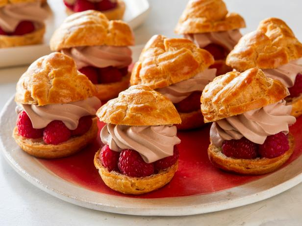

Cream Puff
Kaç Kişilik :10
Hazırlama Süresi :60
Pişirme Süresi :30
Malzemeler
- 1 çay bardağı su
- 1 çay bardağı süt
- 1 çay kaşığı şeker
- Yarım çay kaşığı tuz
- 70 gram tereyağı
- 1 su bardağı un
- 3 yumurta
Üzerindeki hamur için;
- 80 gram tereyağı (oda sıcaklığında)
- 1 çay bardağı esmer şeker
- 1 su bardağı un
Kreması için;
- 3 su bardağı süt
- 4 yumurta sarısı
- 1 çay bardağı toz şeker
- 3 yemek kaşığı nişasta
- 1 paket vanilya
- 1 paket krem şanti
Cream Puff Tarifi Nasıl Yapılır?
- İlk olarak hamuru için su, süt ve tereyağını tencereye alalım.
- Kaynayınca şeker ve tuzunu ekleyelim.
- En son unu ekleyip 3-4 dakika sürekli karıştırarak pişirelim.
- Soğumaya bırakalım.
- Soğuyunca yumurtaları tek tek ekleyip çırpalım.
- Krema torbasına koyup profiterol gibi ceviz büyüklüğünde tepsiye sıkalım.
- Kıtır hamuru için oda sıcaklığındaki tereyağı ve esmer şekeri krema haline gelene kadar çırpalım.
- Unu ekleyip yoğuralım.
- İki pişirme kağıdı arasına alıp oklavayla inceltelim. Buzluğa atıp 10 dakika bekleyelim.
- Sonra çıkarıp sıktığımız hamur büyüklüğünde yuvarlaklar kesip hamurların üzerine koyalım.
- Önceden ısıtılmış fırında 10 dakika 175 derecede sonra 165 dereceye indirip 30 dakika pişirelim.
- Pişince fırından almayıp içinde soğumasını bekleyelim.
- Kreması için bütün malzemeleri tencereye koyup koyulaşana kadar pişirelim.
- Kreması 1 gün buzdolabında bekletirseniz daha kıvamlı olur./li>
- Daha sonra hamurların içine kremayı dolduralım. Cream pufflar hazır.
- İsterseniz çikolatalı sosla da servis edebilirsiniz.